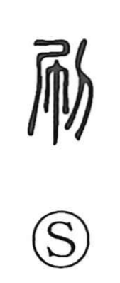

刷

Uncategorized
Kun: suru | On: satsu, setsu
to print ・ to wipe off ・ to scrape off ・ to erase
Explanation
Shirakawa reads 刷 as a compound graph whose old shape shows a person wiping the hands on a cloth hanging at the waist, giving the sense of wiping off or sweeping away. The added knife/edge component suggests scraping, and, as the Shuowen glosses, it also meant to scrape off or erase—originally of narrow wooden tablets used for writing. Because such tablets were scraped clean and written on again, the idea naturally broadened to printing: inking a carved block and rubbing to transfer characters or images. The character thus preserves practices from a time before paper.